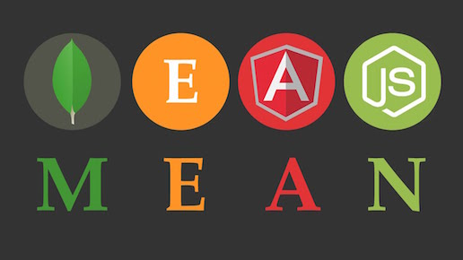

Hello.
I am Samppa Valkama. I'm a gratuated media engineer (BEng) from Metropolia University of Applied Sciences but I consider myself a self-taught web developer. I live in Helsinki, the capital city of Finland.
Tools
The last three years I have been working on tasks more or less related to web development. My everyday toolset include HTML5 and CSS3.
I have experience on working with the most popular MV* frameworks like Ember.js, Backbone.js and AngularJS. If I do need a server or/and a database for a project I usually choose MEAN stack meaning Node.js server with Express framework connected to mongoDB database and AngularJS as a frontend framework. As a CSS pre-processor I've been using LESS because it goes well together with Bootstrap. For version control GitHub has served me well.
At the moment
I am currently working as a project engineer in Miina Sillanpää Foundation. I create HTML5 software for browser and tablets. I've also found myself tinkering with custom ROMs and various Android stuff. Before that I was building a social media platform for elderly people in Pieni piiri Oy. Pieni piiri brings social media accessible for everyone via easy to use video chat. You can also take a look at my CV (unfortunately only in finnish).
Leisure
On my spare time I like to do sports. I go gym and jog almost daily basis. As a finn I like to spent time at a summer cottage. Lately I've been into indoor climbing aka bouldering which I would gladly to do more if I wasn't constantly injured. I also spend lots of time on front of the computer screen playing and watching eSports. Experimenting with the bleeding edge tech is also something I try to fit in quite often. If I had the time I would dive into React.js and EcmaScript 6.
This site was an experiment with Bootstrap 4 alpha, Sass and Gulp. I don't know if I like Bootstrap 4 using rems instead of pixels. At least I couldn't get them to work with mobile iOS devices. On the contrary using Gulp felt great! In future I will consider using it over Grunt for sure. This project can be found here. Btw, this site is running on Rasperry Pi.